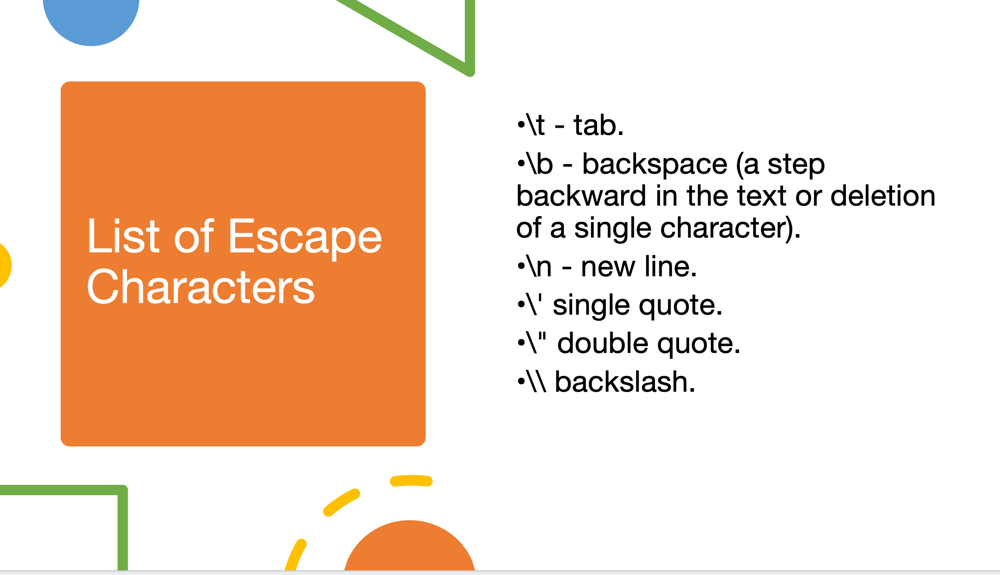
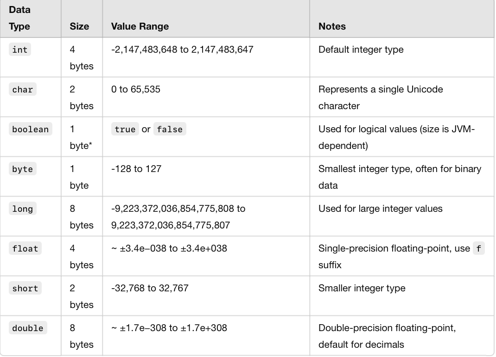
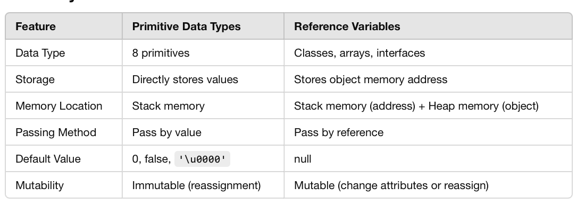
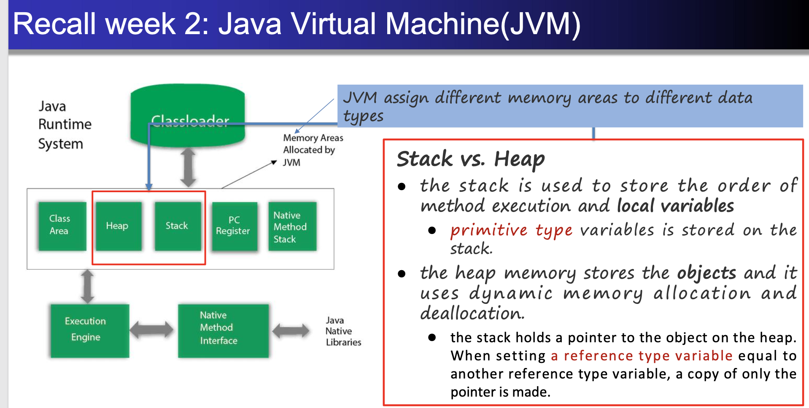
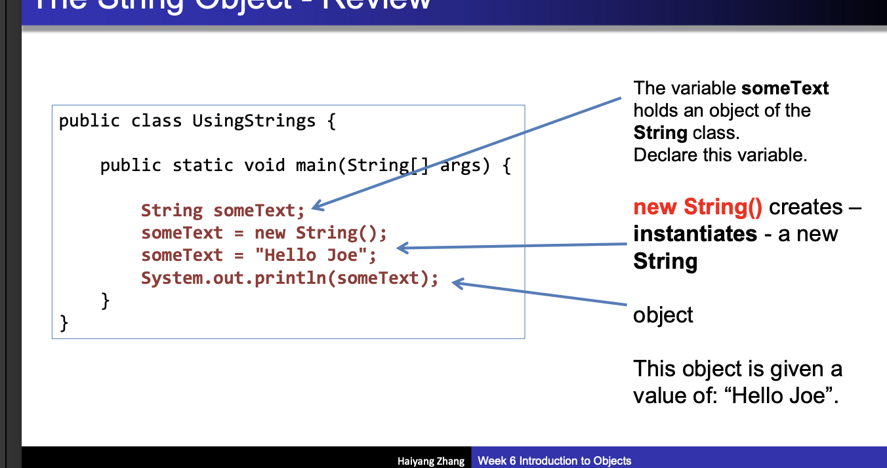

JavaCPT105
static
有无static的区别：有static，即静态的，objects共享一个memory；无static，objects各有各的memory
eg 共享的话，每次counter++都是作用在同一个memory;不共享，每次counter++就加在各自的memory（它们互不相干）

data type
int: 4 bytes (32 bits)
char: 2 bytes (16 bits) — This is because char represents a Unicode character, which uses 2 bytes.
boolean: 1 byte (although the actual memory usage might vary depending on the JVM implementation, typically 1 byte is used)
byte: 1 byte (8 bits) -128 to 127
long: 8 bytes (64 bits)
float: 4 bytes (32 bits)
short: 2 bytes (16 bits)
double: 8 bytes (64 bits)

public class ArrayExample {
public static void main(String[] args) {
// 1. int array
int[] numbers = new int[5];
for (int i = 0; i < numbers.length; i++) {
numbers[i] = i + 1; // Initializing with values 1 to 5
}
// 2. char array
char[] letters = new char[5];
for (int i = 0; i < letters.length; i++) {
letters[i] = (char) ('A' + i); // Initializing with 'A', 'B', 'C', 'D', 'E'
}
// 3. boolean array
boolean[] flags = new boolean[5];
for (int i = 0; i < flags.length; i++) {
flags[i] = i % 2 == 0; // Alternating true and false
}
// 4. byte array
byte[] bytes = new byte[5];
for (int i = 0; i < bytes.length; i++) {
bytes[i] = (byte) (i + 1); // Initializing with values 1 to 5
}
// 5. long array
long[] largeNumbers = new long[5];
for (int i = 0; i < largeNumbers.length; i++) {
largeNumbers[i] = (i + 1) * 1000L; // Initializing with multiples of 1000
}
// 6. float array
float[] decimals = new float[5];
for (int i = 0; i < decimals.length; i++) {
decimals[i] = i * 1.5f; // Initializing with values 0.0, 1.5, 3.0, 4.5, 6.0
}
// 7. short array
short[] smallNumbers = new short[5];
for (int i = 0; i < smallNumbers.length; i++) {
smallNumbers[i] = (short) (i * 10); // Initializing with multiples of 10
}
// 8. double array
double[] preciseDecimals = new double[5];
for (int i = 0; i < preciseDecimals.length; i++) {
preciseDecimals[i] = i * 2.5; // Initializing with values 0.0, 2.5, 5.0, 7.5, 10.0
}
// Output each array
System.out.println("int array: ");
printArray(numbers);
System.out.println("char array: ");
printArray(letters);
System.out.println("boolean array: ");
printArray(flags);
System.out.println("byte array: ");
printArray(bytes);
System.out.println("long array: ");
printArray(largeNumbers);
System.out.println("float array: ");
printArray(decimals);
System.out.println("short array: ");
printArray(smallNumbers);
System.out.println("double array: ");
printArray(preciseDecimals);
}
// Helper methods to print arrays
public static void printArray(int[] array) {
for (int value : array) {
System.out.print(value + " ");
}
System.out.println();
}
public static void printArray(char[] array) {
for (char value : array) {
System.out.print(value + " ");
}
System.out.println();
}
public static void printArray(boolean[] array) {
for (boolean value : array) {
System.out.print(value + " ");
}
System.out.println();
}
public static void printArray(byte[] array) {
for (byte value : array) {
System.out.print(value + " ");
}
System.out.println();
}
public static void printArray(long[] array) {
for (long value : array) {
System.out.print(value + " ");
}
System.out.println();
}
public static void printArray(float[] array) {
for (float value : array) {
System.out.print(value + " ");
}
System.out.println();
}
public static void printArray(short[] array) {
for (short value : array) {
System.out.print(value + " ");
}
System.out.println();
}
public static void printArray(double[] array) {
for (double value : array) {
System.out.print(value + " ");
}
System.out.println();
}
}int array:
1 2 3 4 5
char array:
A B C D E
boolean array:
true false true false true
byte array:
1 2 3 4 5
long array:
1000 2000 3000 4000 5000
float array:
0.0 1.5 3.0 4.5 6.0
short array:
0 10 20 30 40
double array:
0.0 2.5 5.0 7.5 10.0 Public class Solution{
Public static void main(String args[]){
Int i;
for(i = 1; i < 6; i++){
if(i > 3) continue;
}
System.out.println(i);
}
}
int result = 5;
int newValue = result++; // newValue = 5, result = 6int result = 5;
int newValue = ++result; // newValue = 6, result = 6reference variable and primative data type
public void changeValue(int num) { num = 20; }
int x = 10; changeValue(x); System.out.println(x); // Output: 10, x is unchangedd
public void changeColor(Car car) { car.color = "Blue"; }
Car myCar = new Car("Red"); changeColor(myCar); System.out.println(myCar.color); // Output: Blue
JVM

Stack: store the order of the method execution and local variables
- primitive type variablesheap memory stores the objects and it uses dynamic memory allocation and deallocaton
- the stack holds a pointer to the object on the heap. **reference type variable=another**--copy of only the pointer is made.
primitives and objects
primitives do not have methods, which store an actual value and the variable holds that value
objects containing properties(variables) and behaviour(methods) have methods, which are reffered to by reference and the variable holds a memory address poingting to the object.
- Java objects have states and behaviour

- Data object
- classes in java
A class is a template for objects.A class defines object properties. A class also describes object behavior.(objects, instances of the class, are in the main method)
It is the constructor that allows our initial objects to be different when they are first created!
local/instance variable
public class Person {
private String name; // 实例变量
private int age; // 实例变量
public Person(String name, int age) { // name 和 age 是构造函数的局部变量
this.name = name; // 将局部变量 name 的值赋给实例变量 name
this.age = age; // 将局部变量 age 的值赋给实例变量 age
}
public void displayInfo() {
System.out.println("Name: " + name + ", Age: " + age);
}
}
name 和 age 是构造函数 Person(String name, int age) 的局部变量。 this.name 和 this.age 是 Person 类的实例变量。 构造函数通过 this.name = name; 和 this.age = age; 将局部变量的值赋给实例变量，以便在对象的生命周期内保持这些信息。
public class MyClass {
// 静态变量（类变量）
private static int staticCount = 0;
// 实例变量
private int instanceCount = 0;
// 静态方法（类方法） - 不加 private
public static int getStaticCount() {
return staticCount;
}
// 静态方法（类方法） - 使用 private 修饰
private static void incrementStaticCount() {
staticCount++;
}
// 实例方法 - 不加 private
public int getInstanceCount() {
return instanceCount;
}
// 实例方法 - 使用 private 修饰
private void incrementInstanceCount() {
instanceCount++;
}
// 公共方法，调用私有方法
public void updateCounts() {
incrementStaticCount(); // 调用静态的私有方法
incrementInstanceCount(); // 调用实例的私有方法
}
}
静态方法 getStaticCount(): 这是一个公共的类方法，用于返回 staticCount 的值。可以通过类名直接访问，例如 MyClass.getStaticCount()。 静态方法 incrementStaticCount(): 这是一个私有的静态方法，仅能在类内部调用。例如，可以通过 updateCounts() 方法在内部调用。 实例方法 getInstanceCount(): 这是一个公共的实例方法，用于返回 instanceCount 的值。必须通过实例对象来调用，例如 myObject.getInstanceCount()。 实例方法 incrementInstanceCount(): 这是一个私有的实例方法，仅能在类内部调用。只能在 updateCounts() 方法中使用。 公共方法 updateCounts(): 这是一个公共方法，可以访问类内部的私有方法 incrementStaticCount() 和 incrementInstanceCount()。此方法可以由类的实例调用。
public class Test {
public static void main(String[] args) {
MyClass myObject = new MyClass();
// 调用公共静态方法
System.out.println("Static Count: " + MyClass.getStaticCount());
// 调用公共实例方法
System.out.println("Instance Count: " + myObject.getInstanceCount());
// 更新计数值
myObject.updateCounts();
// 再次查看计数值
System.out.println("Static Count after update: " + MyClass.getStaticCount());
System.out.println("Instance Count after update: " + myObject.getInstanceCount());
}
}Static Count: 0
Instance Count: 0
Static Count after update: 1
Instance Count after update: 1public class User {
// 私有变量：默认设为私有，只有类内部可以访问
private String username;
private String password;
// 公有构造方法：需要从其他类访问创建实例，因此设为 public
public User(String username, String password) {
this.username = username;
this.password = password;
}
// 私有方法：用于验证密码，只在类内部使用
private boolean isValidPassword(String password) {
// 仅在此类内部进行密码验证逻辑
return password.length() >= 8;
}
// 公共方法：允许从外部访问，检查密码是否合法
public boolean checkPassword(String password) {
return isValidPassword(password);
}
// 公共方法：获取用户名
public String getUsername() {
return username;
}
// 公共方法：设置新密码，带有验证逻辑
public boolean setPassword(String newPassword) {
if (isValidPassword(newPassword)) {
this.password = newPassword;
return true;
} else {
System.out.println("密码长度必须至少8位！");
return false;
}
}
}public class TestUser {
public static void main(String[] args) {
// 创建 User 对象实例
User user = new User("Alice", "password123");
// 获取用户名
System.out.println("用户名: " + user.getUsername());
// 尝试设置新密码
if (user.setPassword("newpass")) {
System.out.println("密码设置成功！");
} else {
System.out.println("密码设置失败！");
}
}
}用户名: Alice
密码长度必须至少8位！
密码设置失败！public class Person {
// 静态变量，所有实例共享
private static String name;
public Person(String name) {
// 设置静态变量的值，这会影响所有实例
this.name = name;
}
public String getName() {
return name;
}
}public class Person {
// 实例变量，每个实例独立拥有
private String name;
public Person(String name) {
this.name = name;
}
public String getName() {
return name;
}
}public class TestPerson {
public static void main(String[] args) {
Person person1 = new Person("Bruce Lee");
Person person2 = new Person("Jackie Chan");
System.out.println("Person 1's name: " + person1.getName()); // 输出: Bruce Lee
System.out.println("Person 2's name: " + person2.getName()); // 输出: Jackie Chan
}
}public class Person {
private String name;
private int age;
public Person(String name, int age) {
this.name = name;
this.age = age;
}
// 覆盖 toString 方法，以便输出 Person 对象的信息
@Override
public String toString() {
return "Person{name='" + name + "', age=" + age + "}";
}
}
public class TestPersonArray {
public static void main(String[] args) {
// 创建两个 Person 对象
Person p1 = new Person("Bruce Lee", 32);
Person p2 = new Person("Jackie Chan", 65);
// 创建 Person 类型的数组
Person[] people = new Person[2];
people[0] = p1;
people[1] = p2;
// 打印数组对象的引用（未格式化的输出）
System.out.println("Array reference: " + people);
// 使用 toString 方法逐个输出数组中的对象
System.out.println("Array contents:");
for (Person person : people) {
System.out.println(person);
}
}
}